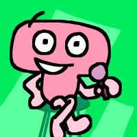

T
Gender: female
Pronouns: she/her
Age: 19
Purple: not really
T is the… overbearing… co-host of Toilet Paper who has been wanting to host her very own TV show since early childhood. Ever since watching Trials for Idyllic Paradise she's been dead-set on creating something similar. It was very good for a lonely and unpopular girl like her growing up.
Voiced by: Brittany